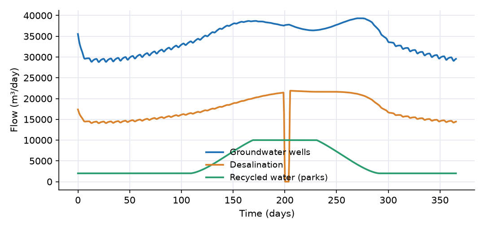
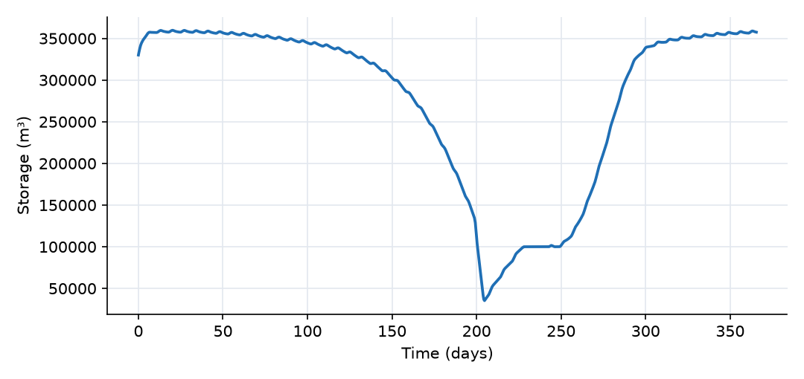
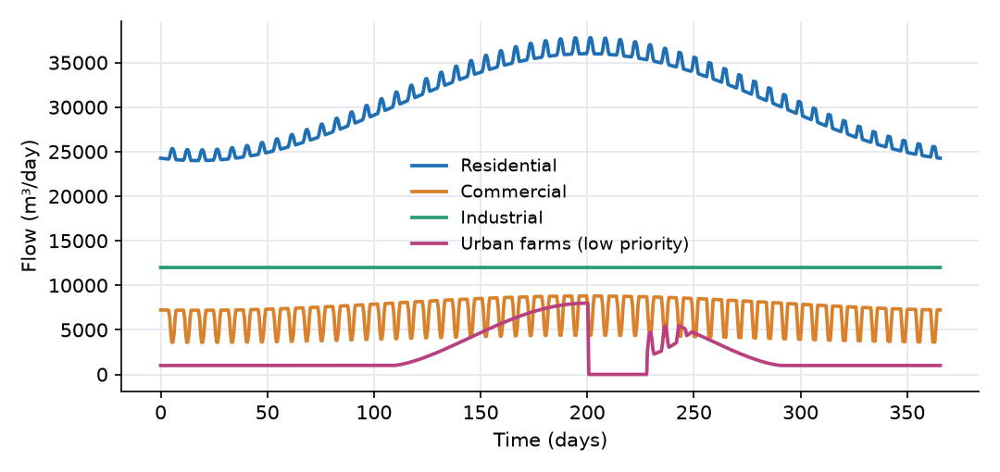
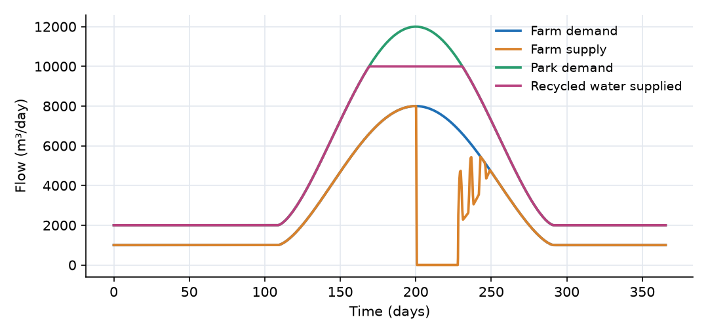

What this model represents
A coastal city of about 200,000 people draws its water from a groundwater well field and a seawater desalination plant. Both feed the city's storage reservoirs, from which water is delivered to households, businesses and industry. Peri-urban farms are also connected, but with a lower priority: they are the first to be cut off when storage runs low. Used water goes to a wastewater treatment plant. Part of the treated water is reused to irrigate parks, and the rest is discharged.
The model runs for one year with daily demand and supply series. It answers the questions a water manager asks of such a system: how much each source has to supply, whether storage is large enough to ride out a supply interruption, who goes without when it is not, and how much wastewater could be reused. A 5-day desalination outage at the peak of the summer demand is the stress test.
How it works
All quantities are volumes (m³) and flows (m³/day). Time is in days.
Supply sources. The well field and the desalination plant are small buffer stores. Each refills at a rate that falls as the buffer fills:
P = (P_max(t) + P_const) · max(C_src − S_src, 0) / C_src
with P_max(t) the available production from its time series and C_src = 10,000 m³. Each source sends water to city storage through a transfer link:
Q_transfer = (P_max(t) + P_const) · exp(−0.05 · S / (C − S))
where S and C = 400,000 m³ are the storage and capacity of the city storage. The transfer runs at the full available production when city storage is low, and is throttled smoothly as storage approaches its capacity, so it can never overflow. At 330,000 m³, for example, the factor is exp(−0.05 × 330/70) = 0.79.
City storage. A single balance:
dS/dt = Q_wells + Q_desal − Q_residential − Q_commercial − Q_industrial − Q_farms
High-priority deliveries (households, businesses, industry) take the full demand D(t) of the receiving user as long as there is any water in storage:
Q = D(t) · S / (S + 0.1)
Low-priority delivery (farms) takes the full demand only while storage is above a threshold S_thr = 100,000 m³:
Q = D(t) · x² / (x² + 1), x = max(S − S_thr, 0)
with x in m³, so the switch is effectively sharp. Below the threshold the farms receive nothing, which keeps the remaining storage for the high-priority users. Each delivery link also reports a deficit, Q − D(t), which is negative when demand is not met.
Users. Each user block receives its delivery and sends wastewater to the treatment plant:
Q_sewer = D(t) · r · η
with r the return fraction (0.80 residential, 0.85 commercial, 0.70 industrial; called Recycling_coeff in the plugin) and η = 0.95 the treatment efficiency. The rest is consumed, and accumulates in the user's storage as a running total of consumptive use. The farms and parks return nothing.
Treatment plant and reuse. The plant has 5,000 m³ of equalization storage. Recycled water goes to park irrigation at
Q_recycled = min(D_parks(t), R · S_tp / (S_tp + 1))
with R = 10,000 m³/day the plant's reuse capacity. Effluent above the plant's storage capacity is discharged at 1000 · (S_tp − 5,000) per day, which keeps the plant storage just above 5,000 m³. The output column Treatment_Plant_discard_rate is this discharge, written as a negative number.
Sign convention. Every link is positive in the direction it is drawn: source to storage, storage to user, user to treatment plant, treatment plant to parks.
What to look for in the results
- Supply by source. Over the year the wells deliver 12.5 million m³ and the desalination plant 6.4 million m³. In winter, when demand is low and storage is near its capacity, both run at about two thirds of their available production. In summer they run close to it.
- Seasonal drawdown. Storage peaks at 360,000 m³ around day 20 and declines steadily from about day 120 as residential, farm and park demands rise and the well field loses capacity. By day 199 it is down to 114,000 m³.
- The outage. With the desalination plant off from day 200 to 204, the wells (about 37,800 m³/day) cannot meet the 54,500 m³/day of high-priority demand. Storage falls below the farm threshold within half a day and the farm supply stops. The high-priority users draw storage down to 35,000 m³ on day 204.7, and then the plant restarts.
- Priority at work. Residential, commercial and industrial users receive their full demand all year (their deficits never exceed about 0.1 m³/day). The farms carry the whole shortage: they receive nothing from day 200 to 228 and only part of their demand until day 249, while storage recovers to the threshold. They receive 0.83 of their 1.08 million m³ annual demand, a 23% shortfall.
- Holding at the threshold. From about day 228 to 250 storage stays at 100,000 m³. Any supply above the high-priority demand goes to the farms, so the threshold behaves like a reservoir rule. The farm supply fluctuates in this period because the steep switch responds to small day-to-day changes in the other demands.
- Wastewater and reuse. The sewers carry 13.4 million m³ to the treatment plant. 1.66 million m³ is reused on the parks and 11.7 million m³ is discharged. The parks need 1.75 million m³; their supply is capped at the plant's 10,000 m³/day from day 169 to 231, so 5% of the park demand is unmet. There is far more treated wastewater than the reuse system can deliver.
Assumptions and limitations
- Supply, storage and users are lumped volumes. There is no pipe network, pressure or travel time, and storage has no water level.
- The transfer links throttle both sources by the same factor. The model does not give one source precedence over the other (for example, using the cheaper wells first and the desalination plant only when needed).
- Wastewater flow is computed from each user's demand, not from the water it actually received. This is correct in this model, where the sewered users never go short. If a sewered user were curtailed, the plugin would still send wastewater for water that was never delivered, and the user's storage would become negative. Only users without a sewer connection (here the farms) should be given a low priority.
- The wastewater return fraction, treatment efficiency and reuse capacity are constants. Leakage, infiltration into sewers and storm inflow are not included.
- Groundwater availability is prescribed by a time series. The model does not compute the aquifer response to pumping.
- All demand and capacity series are synthetic.
Model diagram
Hover a block or link to see its name and type. Arrows show the positive flow direction.
Components
Click a component to see every property set in the model file, with units and meaning.
Blocks 9
Storage compartments: each holds water (and dissolved or particulate mass) and has a state that evolves in time.
Well_FieldGroundwater_Supply_wells · urban_water_managementMunicipal groundwater wells. Their available production (37,000 to 45,000 m³/day) is read from well_capacity.csv. The block holds a small 10,000 m³ buffer that refills from the wells.
well_capacity.csv. The block holds a small 10,000 m³ buffer that refills from the wells.Groundwater_Supply_wells: Groundwater_Supply_wells
| Property | Value | Unit | Meaning |
|---|---|---|---|
| Initial Storage | 5000 | m3 | Initial Storage;Storage |
| Storage capacity | 10000 | m3 | Storage capacity |
| Maximum production rate time series | well_capacity.csv | Maximum production rate time series | |
| Constant production rate | 0 | m3/day | Constant production rate |
| Mean elevation of the plant | 0 | m | Mean elevation of the plant |
Desalination_Plantdesalination_plant · urban_water_managementSeawater desalination plant with a production of 22,000 m³/day, read from desalination_capacity.csv, which includes a 5-day shutdown. 10,000 m³ buffer.
desalination_capacity.csv, which includes a 5-day shutdown. 10,000 m³ buffer.desalination_plant: Desalination Plant
| Property | Value | Unit | Meaning |
|---|---|---|---|
| Initial Storage | 5000 | m3 | Initial Storage;Storage |
| Storage capacity | 10000 | m3 | Storage capacity |
| Maximum production rate time series | desalination_capacity.csv | Maximum production rate time series | |
| Constant production rate | 0 | m3/day | Constant production rate |
| Mean elevation of the plant | 0 | m | Mean elevation of the plant |
City_StorageWater Storage · urban_water_managementThe city's treated-water storage (service reservoirs and tanks), 400,000 m³ capacity, 330,000 m³ at the start. All supply enters here and all potable deliveries leave from here.
| Property | Value | Unit | Meaning |
|---|---|---|---|
| Initial Storage | 330000 | m3 | Initial Storage;Storage |
| Capacity | 400000 | m3 | Capacity |
| Elevation | 0 | m | Elevation |
Residentialresidential_user · urban_water_managementHouseholds. Demand from residential_demand.csv, served with high priority. Its storage counts the water consumed and not returned to the sewer.
residential_demand.csv, served with high priority. Its storage counts the water consumed and not returned to the sewer.residential_user: Residential User
| Property | Value | Unit | Meaning |
|---|---|---|---|
| Initial Storage | 0 | m3 | |
| Use rate time series | residential_demand.csv | Use rate time series | |
| Constant use rate | 0 | m3/day | Constant use rate |
Commercialcommertial_user · urban_water_managementShops and offices. Demand from commercial_demand.csv, high priority.
commercial_demand.csv, high priority.commertial_user: Commertial User
| Property | Value | Unit | Meaning |
|---|---|---|---|
| Initial Storage | 0 | m3 | Initial Storage;Storage |
| Use rate time series | commercial_demand.csv | Use rate time series | |
| Constant use rate | 0 | m3/day | Constant use rate |
Industrialindustrial_user · urban_water_managementIndustry, a constant demand of 12,000 m³/day, high priority. (The output column Industrial_deficit is defined by the plugin from the block's own storage and is not a supply deficit. Use Industrial_Supply_deficit.)
Industrial_deficit is defined by the plugin from the block's own storage and is not a supply deficit. Use Industrial_Supply_deficit.)industrial_user: Industrial User
| Property | Value | Unit | Meaning |
|---|---|---|---|
| Initial Storage | 0 | m3 | Initial Storage;Storage |
| Constant use rate | 12000 | m3/day | Constant use rate |
Urban_Farmsagricultural_user · urban_water_managementPeri-urban farms and greenhouses irrigated from the city system. Demand from farm_irrigation_demand.csv. Low priority, so they are curtailed first. Their water is consumed and nothing returns to the sewer.
farm_irrigation_demand.csv. Low priority, so they are curtailed first. Their water is consumed and nothing returns to the sewer.agricultural_user: Agricultural User
| Property | Value | Unit | Meaning |
|---|---|---|---|
| Initial Storage | 0 | m3 | Initial Storage;Storage |
| Use rate time series | farm_irrigation_demand.csv | Use rate time series | |
| Constant use rate | 0 | m3/day | Constant use rate |
Treatment_PlantWastewater_Treatment_plant · urban_water_managementWastewater treatment plant with 5,000 m³ of equalization storage. It can supply up to 10,000 m³/day of recycled water. Treated effluent above that storage is discharged (for example to a sea outfall).
Wastewater_Treatment_plant: Wastewater_Treatment_plant
| Property | Value | Unit | Meaning |
|---|---|---|---|
| Initial Storage | 0 | m3 | Initial Storage;Storage |
| Storage capacity | 5000 | m3 | Storage capacity |
| Constant production rate | 10000 | m3/day | Constant production rate |
| Mean elevation of the plant | 0 | m | Mean elevation of the plant |
Parks_IrrigationAmenities · urban_water_managementIrrigation of parks and public green space, supplied only with recycled water. Demand from park_irrigation_demand.csv.
park_irrigation_demand.csv.Amenities: Amenities User
| Property | Value | Unit | Meaning |
|---|---|---|---|
| Initial Storage | 0 | m3 | |
| Use rate time series | park_irrigation_demand.csv | Use rate time series | |
| Constant use rate | 0 | m3/day | Constant use rate |
Links 10
Connections that move water (and the mass it carries) between blocks.
Well_SupplyWater Transfer · urban_water_managementTransfer from the well field to city storage, at the well production rate, reduced as city storage approaches its capacity.
Water Transfer: Water Transfer
Desalination_SupplyWater Transfer · urban_water_managementTransfer from the desalination plant to city storage, reduced in the same way.
Water Transfer: Water Transfer
Residential_SupplyFlow_to_user · urban_water_managementHigh-priority delivery to households.
Flow_to_user: Flow link to user
Commercial_SupplyFlow_to_user · urban_water_managementHigh-priority delivery to commercial users.
Flow_to_user: Flow link to user
Industrial_SupplyFlow_to_user · urban_water_managementHigh-priority delivery to industry.
Flow_to_user: Flow link to user
Farm_SupplyFlow_to_user_low_priority · urban_water_managementLow-priority delivery to the urban farms, only while city storage is above 100,000 m³.
Flow_to_user_low_priority: Flow link to user (Low priority)
| Property | Value | Unit | Meaning |
|---|---|---|---|
| Minimum Storage Threshold | 100000 | m3 | Minimum Storage Threshold |
Residential_SewerWastewater_flow · urban_water_managementWastewater from households, 80% of their demand, times a treatment efficiency of 0.95.
Wastewater_flow: Flow to water recycling plant
| Property | Value | Unit | Meaning |
|---|---|---|---|
| The fraction of demand that will be recycled | 0.8 | The fraction of demand that will be recycled | |
| Treatment Plant Efficiency | 0.95 | Treatment Plant Efficiency |
Commercial_SewerWastewater_flow · urban_water_managementWastewater from commercial users, 85% of demand times 0.95.
Wastewater_flow: Flow to water recycling plant
| Property | Value | Unit | Meaning |
|---|---|---|---|
| The fraction of demand that will be recycled | 0.85 | The fraction of demand that will be recycled | |
| Treatment Plant Efficiency | 0.95 | Treatment Plant Efficiency |
Industrial_SewerWastewater_flow · urban_water_managementWastewater from industry, 70% of demand times 0.95.
Wastewater_flow: Flow to water recycling plant
| Property | Value | Unit | Meaning |
|---|---|---|---|
| The fraction of demand that will be recycled | 0.7 | The fraction of demand that will be recycled | |
| Treatment Plant Efficiency | 0.95 | Treatment Plant Efficiency |
Recycled_WaterRecycled_flow · urban_water_managementRecycled water from the treatment plant to park irrigation, up to the plant's 10,000 m³/day.
Recycled_flow: Flow of recycled water
Input files
well_capacity.csv | Available well-field production (m³/day). 45,000 m³/day, reduced to 37,000 m³/day in late summer (around day 225) by seasonal drawdown in the aquifer. Synthetic. |
desalination_capacity.csv | Available desalination production (m³/day). 22,000 m³/day, zero from day 200 to day 204 (a maintenance outage). Synthetic. |
residential_demand.csv | Household demand (m³/day) for each day of the year (time in days). 30,000 m³/day on average with a ±20% seasonal swing peaking around day 200, and 5% more at weekends. Synthetic. |
commercial_demand.csv | Commercial demand (m³/day). 8,000 m³/day on weekdays and 4,000 m³/day at weekends, with a ±10% seasonal swing. Synthetic. |
farm_irrigation_demand.csv | Farm irrigation demand (m³/day). 1,000 m³/day outside the growing season, rising to 8,000 m³/day around day 200. Synthetic. |
park_irrigation_demand.csv | Park irrigation demand (m³/day). 2,000 m³/day outside the dry season, rising to 12,000 m³/day around day 200. Synthetic. |
Simulation settings
| Start time | 0 |
| End time | 365 |
| Initial time step | 0.01 |
| Write interval (steps) | 1 |
Results
Produced by running the downloaded model unchanged.



